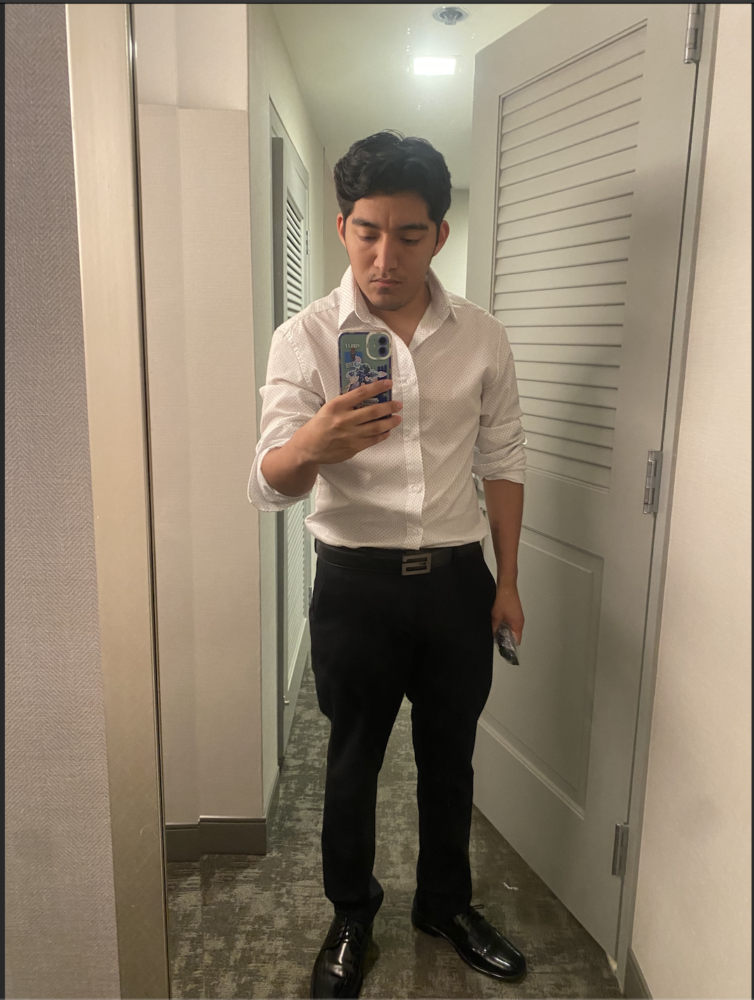

|  | Hello everyone, I'm Armando Mendez and at 20 years old, I find myself in an exciting chapter of my life. Currently, I'm a student at Kean University, where i'm fully dedicated to my academic persuits. I've chosen to major in Information Technology with Cyber-Security which has become not only my area of focus but also a true passion. My time at Kean has been transformative, where I've not only gained knowledge but also had the opportunity to engage in various extracurricular activities, expanding my horizons beyond the classroom. The delicate balance between my education and my work life has taught me invaluable skills, from time management to problem-solving. I cherish the opportunities for growth and learning that come my way, always striving for excellence in both my academic and professional endeavors. As I continue on this journey, I'm excited to see where life will take me next. I'm a firm believer in seizing opportunities and embracing challenges, and I look forward to the adventures and achievements that lie ahead. |